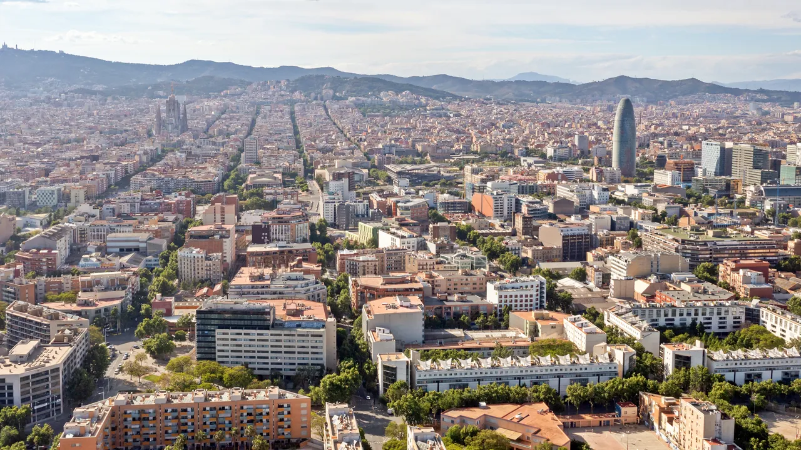
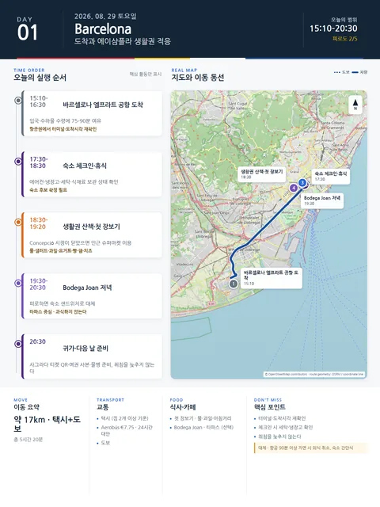

Day 1 · 8/29 토 · Barcelona

오늘의 주요 장소

- 핵심 실행
- OZ511 19:10 T1 도착·야간 체크인
- 권장 출발
- 19:10 도착 기준
- 완충
- 입국·수하물·이동 120–150분
- 예약
- 2건 — 완료 2 · 미확정 0 · 현황
시간표
| 시간 | 일정 | 실행 포인트 |
|---|---|---|
| 19:10 | 바르셀로나 엘프라트 T1 도착 | OZ511 (아시아나, 14시간 20분). 기내에서 저녁을 해결해 둔다. 위탁 수하물 1인 2개 (발권서 기준) |
| 19:10–20:40 | 입국·수하물 수령 | 유럽 장기여행 첫 입국일이므로 75–90분의 여유를 둔다. |
| 20:40–21:30 | 공항→숙소 | 야간·짐 2개 — 택시 기본. Aerobús(24시간, Plaça Espanya 하차)는 대안. |
| 21:30–22:30 | 체크인·샤워 | 체크인 창은 00:00까지. 에어컨·엘리베이터·짐 보관·냉장고 확인 |
| 22:30 이후 | 취침 준비 | 사그라다 티켓 QR·여권 사본만 확인하고 바로 잔다. 필요하면 물만 인근 편의점/자판기 |
피로도
3/5
이 날의 메모
도착, 숙소 정착, 생활권 적응
항공 확정 (2026-08-10 반영): OZ511 ICN T2 11:50 → BCN T1 19:10 (예약 FRRL7R). 저녁 도착이므로 이 날은 순수 도착·취침일이다 — 장보기·산책은 하지 않는다.
야간 도착일이다. 장보기·생활권 파악은 Day 2 아침으로 넘긴다. 항공이 지연되어도 체크인 창(00:00) 안이면 문제없다.
상세 실행 확인
- 최고 리스크
- 야간 도착·수하물 지연
- 우선 삭제
- 장보기·산책 전부
- 대체안
- 체크인·취침만
- 식사·휴식
- 기내식으로 저녁 해결
- 잠금 필요
- 없음 — 항공·숙소 확정
Google 실행지도
도착, 숙소 정착, 에이샴플라 생활권 적응
지도 펼치기
지도는 펼칠 때만 불러옵니다.
구간별 길찾기
Daily Action Map

실제 좌표와 OpenStreetMap을 사용한 실행용 요약입니다. 도로·대중교통 상황은 출발 직전에 다시 확인하세요.